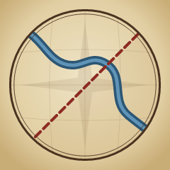

River & Border Studio
Internal publishing tool for the River & Border YouTube channel
Uses YouTube API Services
What this is
River & Border is a YouTube channel that explains history and geography with animated maps (youtube.com/@RiverAndBorder). River & Border Studio is the small, private command-line tool its owner uses to publish and manage the channel's own videos. It is not offered to the public and has a single user: the channel owner.
What it does
- Uploads videos that the channel owner produced, as private or scheduled uploads.
- Sets each video's title, description, tags, chapters, language and thumbnail.
- Reads the channel's own YouTube Analytics (views, watch time, subscribers, retention) so the owner can review performance.
The tool uses YouTube API Services. It only acts on the channel that the owner has authorized, and only after the owner signs in with Google and grants access.
Your data
No data leaves the owner's own computer except the requests sent to YouTube. Read the full Privacy Policy and Terms of Use. By using this tool you agree to the YouTube Terms of Service.